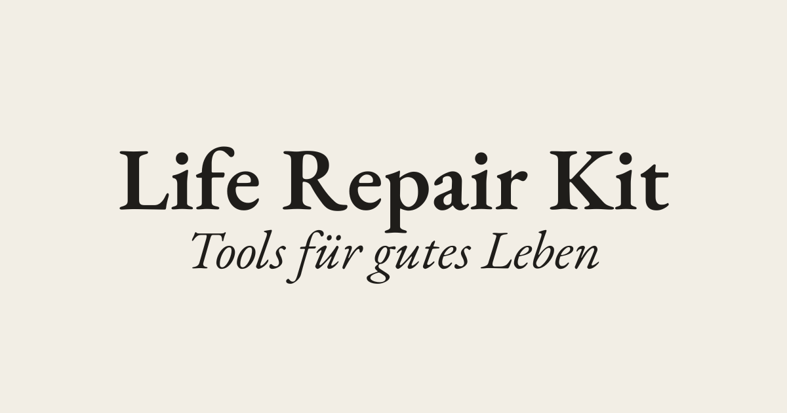

Life Repair Kit
Scroll to read the journey of building Life Repair Kit — a German-language wellbeing tool.
Care & well-being. The product itself helps people notice where life is strained — and find support.
Ethics & privacy. EU data sovereignty, cookieless analytics, on-device PDF generation, and measurement designed not to bias the person taking it.
Sustainability. A small Rust binary and framework-free frontend on scale-to-zero, renewable-energy EU cloud — low bandwidth, low compute.
Free & open source — pragmatically. Rust, TypeScript, PostgreSQL, Typst, Caddy, Umami — an open, self-owned stack with people, not platforms, at the centre. And where buying beat building (Mailcoach), we said so plainly rather than force the ideology.

The ResilienzRadar
The ResilienzRadar maps ten life dimensions in four clusters — Self (yellow), With others (red), World (blue), Storytelling (black). It asks not what is broken? but where is life stable — and where is it shaky? Here: a life that mostly holds, with a few thin spots. (Scroll to watch it change.)
In acute crisis, little holds — the wedges pull in toward the centre. That’s allowed to be visible; the radar just shows the shape of it, with no numbers to decode.
Back in balance. A load-bearing foundation returns across most areas — each wedge grows from the centre as that dimension starts to carry weight again.
In full strength, nearly every dimension carries reliably. It’s the same animated component that greets visitors on the live site.
Profil · 01 / 04
How the ResilienzRadar is created
This is where the project is most recognisably a data project: a radar is only as trustworthy as the instrument behind it, so the measurement design received the same care as the code.
The quiz. Fifty statements on a five-point scale (“does not apply at all” → “fully applies”). The items were carefully curated — distilled from the project’s bespoke wellbeing resource hub and written on established psychometric measurement principles: balanced positive/negative keying, plain single-idea wording, and dimensions kept conceptually distinct.
Reverse-scored “strain” items. When agreement signals difficulty (“I often feel tense inside…”), the raw value is inverted — 6 − raw — before aggregation, so a high number always means “doing well,” whichever way an item is phrased.
Scoring. Each dimension is the mean of its adjusted items — a mean, not a sum, so dimensions with different item counts stay comparable on one 1–5 scale. Unanswered dimensions render no wedge but keep their spoke, so a partial result is still honest.
One map, three renderings. From a single score map: an interactive SVG on the page, a server-rendered radar.svg for link previews, and a PDF typeset on the user’s own device via Typst-WASM — results never travel to a server to become a document.
The system that delivers it
One Rust binary serves the API and the static frontend; the browser does the scoring and typesets the PDF itself; everything data-bearing stays in the EU.
The whole system is deliberately few moving parts — one artifact to deploy, one database, a handful of self-hosted services. Zoom in as we walk through it.
Browser. The frontend is vanilla TypeScript + Vite — no React, no Tailwind. It runs the quiz, computes the scores, and typesets the results PDF with Typst compiled to WebAssembly. Brand fonts are self-hosted; no third-party CDN at runtime.
The binary. A single Rust/Axum process — chosen for its small, self-contained binary with no runtime interpreter — serves both the JSON API under /api and the built static frontend. sqlx talks to PostgreSQL; Argon2 hashes admin passwords; the Magazin is rendered from Markdown with pulldown-cmark.
Build vs buy. For email campaigns we chose hosted Mailcoach (EU) over self-hosting listmonk and over ConvertKit — the one deliberate “buy” in an otherwise self-hosted, open-source stack. Email deliverability is a deep, thankless problem worth outsourcing.
The tradeoffs, briefly. One Rust binary means longer compiles but a tiny footprint. Vanilla TS means more DOM code by hand but a small, fast bundle. Client-side Typst-WASM ships a compiler but keeps results on-device. Scaleway EU means a smaller ecosystem than AWS but data sovereignty and renewable energy by construction.
Full-stack decisions, from the repo
“Full-stack” shows up as a chain of small, specific choices where the frontend, backend, and infrastructure meet.
One process, two jobs. main.rs mounts the API under .nest("/api", …) and sends everything else to .fallback(static_files::serve) — the same binary is API server and web server for the SPA.
SEO for a client-rendered SPA. A naïve SPA serves crawlers an empty shell. The static fallback instead rewrites <title>, description, and Open Graph tags per route (static_files.rs + seo.rs), mirrored client-side in seo.ts.
Security at the fallback boundary. Axum doesn’t normalise .. in fallbacks, so a path-traversal guard sends /../../proc/self/environ to the SPA instead of leaking the container’s secrets.
Designing for ephemeral compute. Serverless Containers have no persistent disk, so Magazin images live in PostgreSQL and stream from /api/magazin/image/{uuid} — the storage choice is dictated by the hosting model.
Privacy is the architecture
For a German audience and sensitive wellbeing data, privacy isn’t bolted on — it’s why several choices above were made.
EU data residency. App, database, and registry all live in Scaleway’s Paris region. No personal data leaves the EU — no US-hyperscaler processor to cover with Standard Contractual Clauses.
Data minimisation. The radar needs no account: a result is an anonymous score map keyed by a random UUID. The sensitive results PDF is typeset on the user’s device and never sent to a server.
Security of processing (Art. 32). TLS at Caddy, Argon2 password hashing, constant-time HMAC-SHA256 webhook verification, and the path-traversal guard — the lean stack is also the GDPR-native one.
GDPR-native by design